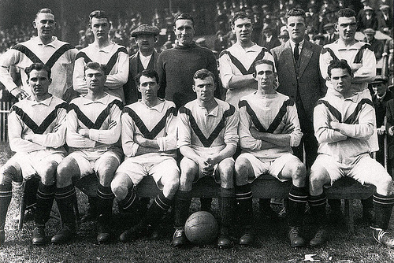
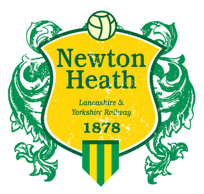

Pocetak istorije
Klub je osnovan 1878. godine pod imenom Fudbalski klub Njuton hit LJR. Osnovali su ga radnici zeleznice u Njuton heltu. Boje dresova su bile zenela i zlatna. Klub je 1893 poceo da se takmici u prvoj ligi i tada su sve veze sa zeleznicom prekinute.

